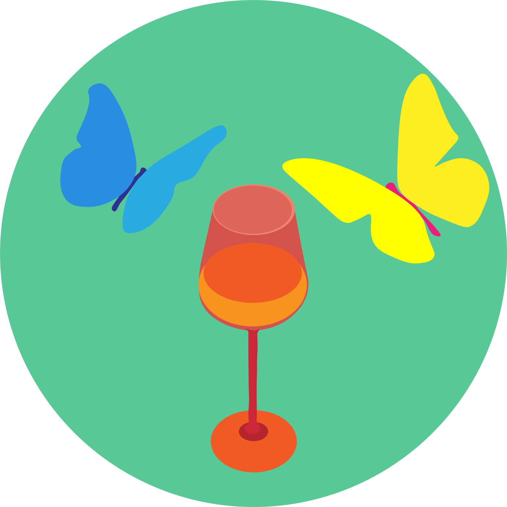
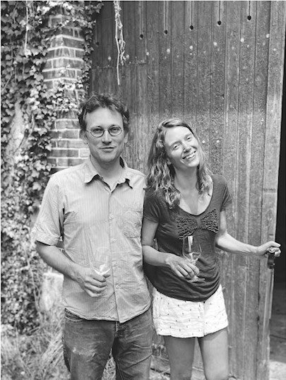

Projet
Nous avons créé Ester dans l’idée d’offrir des cours différents, en petits groupes, parlant à la fois de notre métier, de vins, d’écologie et d’agronomie. Des cours vivants où l’on goûte et l’on sent de vrais produits de qualités pour éveiller son odorat, où l’on déguste des vins naturels produits dans le respect du terroir et du vivant, par des producteurs que nous connaissons tous personnellement. Des ateliers et des évènements qui nous permettent aussi de vous faire découvrir des vignerons dont nous apprécions le travail et avec lesquels nous partageons une même vision de la viticulture et du vin.Dans le souci d’offrir un vrai apprentissage, nous proposons une série de cours ou d’ateliers vivants, comme nos vins, avec un contenu pédagogique important, permettant une progression à son rythme.

Équipe
Nous sommes Leïla Pailhes et Marc Gauthier, producteurs de vin dans le Gers au sein de notre domaine Mille et Une Nuits, et créateurs d’Ester.Après plus de 8 ans d’expérience dans la formation professionnelle en dégustationoenologie, nous avons eu envie de créer des cours à notre goût, mettant en avant les vins naturels, et notre expérience de l’enseignement et de la production de vins. Nous avons chacun un parcours éclectique plein d’expériences différentes, Marc est d’abord musicien tandis que Leïla a commencé sa carrière dans la traduction et le journalisme.
Nous avons créé ensemble une société de négocevinification pour produire nos vins en 2020 et planté notre première parcelle en 2024.
Tous les raisins que nous achetons ou que nous produisons sont en Agriculture biologique, et tous les vins que nous vinifions sont naturels, autrement dit sans aucun additifs.
